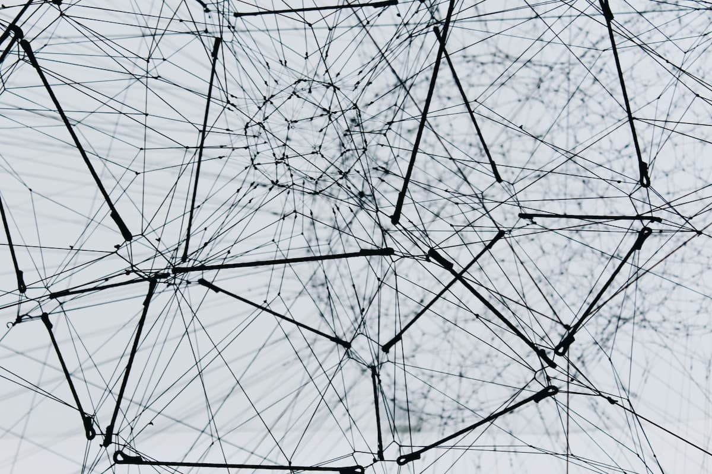
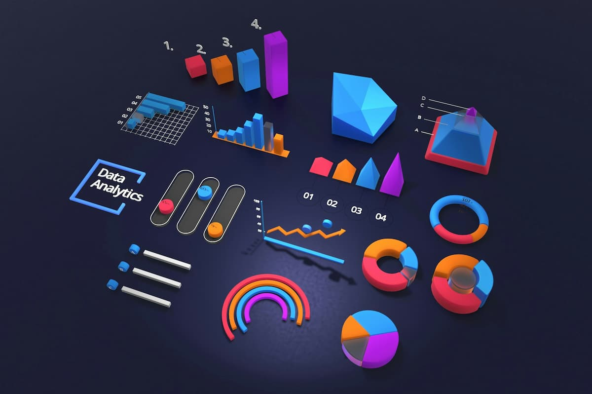
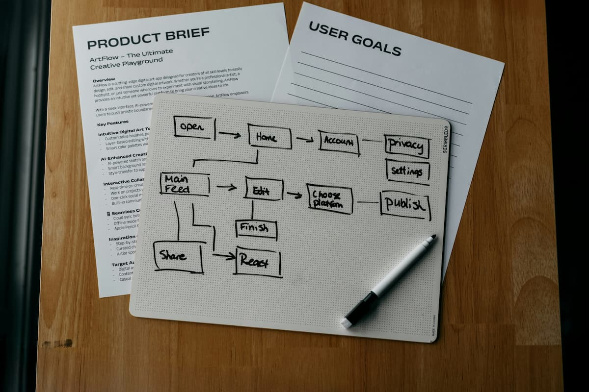

Медіагалерея навчального сайту
Ілюстрації до теми

Графи та топологія мережевих структур. Автор: Alina Grubnyak, Unsplash License.
Аналіз та оптимізація алгоритмічної складності. Автор: Compagnons, Unsplash License.

Структуризація та візуалізація масивів даних. Автор: Deng Xiang, Unsplash License.
Апаратне середовище для високонавантажених обчислень. Автор: imgix, Unsplash License.
Програмна реалізація базових алгоритмів. Автор: Juanjo Jaramillo, Unsplash License.

Схематичне проєктування алгоритмів та блок-схем. Автор: Kelly Sikkema, Unsplash License.
Векторна графіка
Піктограма формату SVG зі зміненим фірмовим кольором заливки.
Відеоматеріали
Демонстраційний огляд навігації та сторінок сайту із синхронними субтитрами.
↑